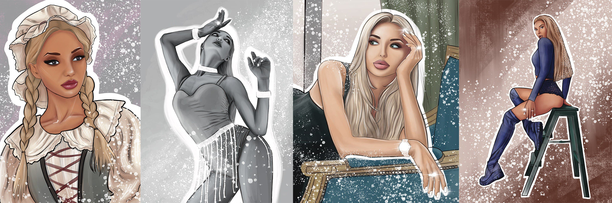

Стиль Масло
Стиль Масло используется для портретов в ярких и сочных цветах. Текстура используемых кистей позволяет передать атмосферу масляной живописи. Так же при печати данная техника смотрится как настоящая картина."
Стикеры
Что такое стикеры и для чего они нужны? Эмоции, образы передаются через стикеры для люой социальной сети. Сейчас очень популярно повышать узнаваемость бренда с помощью стикеров.
Стиль Мультик
Мультяшный стиль только звучит по-детски, он передает красоту картинки. В стиле Мультик можно изобразить все что угодно. Сохраняя красоту и грацию, добавляя ярких и сияющих акцентов, Ваш портрет будет неотразим.